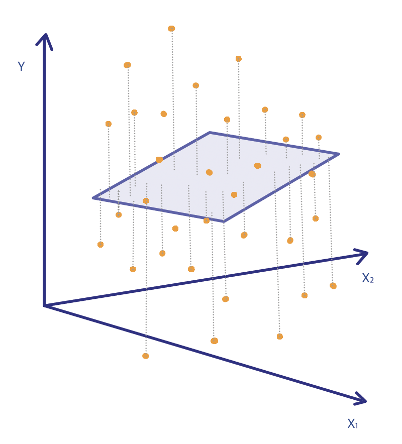

2.2 MLR Model Fitting
Given the training data \(\bigl\{ x_{i1},\; x_{i2}, \ldots, x_{ip};\, y_i\bigr\}_{i=1}^{n}\), we want to estimate \(\mathbf{\beta}\) , i.e. express: \[ \hat{\mathbf{\beta}} \;=\; \left(\hat{\beta}_0,\hat{\beta}_1,\ldots,\hat{\beta}_p\right)^{T} \] as a function of the data.
The estimated regression coefficients \(\hat{\beta}\) are obtained by minimizing the Residual Sum of Squares (RSS): \[RSS \;\;=\;\; ||\mathbf{y} - \mathbf{X} \beta||^2 = (\mathbf{y} - \mathbf{X} \beta)^{T} (\mathbf{y} - \mathbf{X}\beta)\] The RSS minimizes the (Euclidean) distance of the points from the regression surface:

This approach makes minimal assumptions, since it only requires that the pairs \((x_i, y_i)\) are random draws from their population. Specifically, it makes no assumptions about the underlying distribution of the response. It simply finds the best linear fit, without assuming that the model is valid. In fact, the true underlying model does not even need to be linear for this method to produce estimators. Therefore, it often works well regardless of how the data were obtained. If a linear model provides a good approximation to a non-linear truth, then the regression surface can also be viewed as a measure lack-of-fit.
Least-Squares Method
We want to estimate the vector of coefficients \(\mathbf{\beta}\) by minimizing the sum of squared residuals: \[RSS\;\;=\;\; ||y - \mathbf{X} \beta||^2 = (y - \mathbf{X} \beta)^{T} (y - \mathbf{X}\beta)\] We take derivatives with respect to \(\beta\) and set them equal to zero: \[\begin{align*} \frac{\partial RSS}{\partial \beta} &= \mathbf{0}_{p\times 1} \,\, \Leftrightarrow \\ -2 \;\mathbf{X}^T_{p\times n} (y - \mathbf{X}\beta)_{n\times 1} &= \mathbf{0}_{p\times 1} \end{align*}\]
This leads to the so-called Normal Equations \[\mathbf{X}^T (y - \mathbf{X}\beta) = \mathbf{0}\]
Solving the Normal Equations \[(\mathbf{X}^T\mathbf{X})\;\beta = \mathbf{X}^T\; y \] leads to theLeast Squares Estimators in MLR \[\hat{\beta} = (\mathbf{X}^T\mathbf{X})^{-1} \mathbf{X}^T\; y\]
We assume that the rank of \(\mathbf{X}\) is \(p+1\), i.e. no columns of \(\mathbf{X}\) are a linear combinations of the other columns. Since \(\mathbf{X}\) has full column rank, the inverse of \((\mathbf{X}^T\mathbf{X})\) exists.
Fitted, Predicted Values & Residuals
The fitted value of \(y_i\) at \(x_i = \bigl( x_{i1}, x_{i2}, \ldots , x_{ip}\bigr)\) is computed as: \[\hat{y_{i}} = \hat{\beta}_0 + \hat{\beta}_1 x_{i1}+ \hat{\beta}_2 x_{i2} + \ldots + \hat{\beta}_p x_{ip}\]
More generally, using matrix formulation, the fitted values of \(\mathbf{y}\) are given by \[\begin{align*} \hat{\mathbf{y}}_{n\times 1} &= \mathbf{X} \hat{\beta} \\ &= \mathbf{X} (\mathbf{X}^T\mathbf{X})^{-1} \mathbf{X}^T\; y\\ &= \mathbf{X} (\mathbf{X}^T\mathbf{X})^{-1} \mathbf{X}^T\; y := \mathbf{H}_{n \times n} y_{n\times 1} \end{align*}\]
where we define the hat matrix
The Hat Matrix
\[ \mathbf{H}_{n \times n} = \mathbf{X} (\mathbf{X}^T\mathbf{X})^{-1} \mathbf{X}^T\] It is called the hat matrix because it produces the “y-hat” values: \(\hat{y} = \mathbf{H} t\).
The predicted value of \(y\) at a new point \(x_i^* = \bigl( x_{i1}^*, x_{i2}^*, \ldots , x_{ip}^*\bigr)\) is \[\hat{\mathbf{y}}^* = \hat{\beta}_0 + \hat{\beta}_1 x_{i1}^* + \hat{\beta}_2 x_{i2}^* + \ldots + \hat{\beta}_p x_{ip}^*\] In matrix form, the predicted values are \[\hat{\mathbf{y}}^* = \mathbf{X}^* \hat{\beta}\]
Note: The key difference between the fitted and predicted values is that the vector \(\mathbf{x}\) belongs to the training data (it has already been observed), whereas \(\mathbf{x}^*\) is an unobserved feature vector that is independent of the training data.
The residual at observation \(i\) is \[\begin{align*} r_{i} &= y_i - \hat{y}_i \\ &= y_i - \hat{\beta}_0 - \hat{\beta}_1 x_{i1} - \hat{\beta}_2 x_{i2} - \ldots - \hat{\beta}_p x_{ip} \end{align*}\]
In matrix form the residual vector is \[\begin{align*} \mathbf{r}_{n\times 1} &= \mathbf{y} - \hat{\mathbf{y}} \\ &= \mathbf{y} - \mathbf{X}\hat{\beta} = \mathbf{y} - \mathbf{X} (\mathbf{X}^T\mathbf{X})^{-1} \mathbf{X}^T\; y \\ &= \mathbf{y} - \mathbf{H} \mathbf{y} = (\mathbf{I} -\mathbf{H}) \mathbf{y} \end{align*}\]
The residuals \(\mathbf{r}\) are used to estimate the error variance: \[\hat{\sigma}^2 = \frac{1}{n-p-1}\sum_i r_i^2 = \frac{RSS}{n-p-1}\] The denominator \(n-p-1\) is the degrees of freedom of the residuals .
Properties of the Residuals
The least-squares estimator \(\hat{\beta}\) satisfies the normal equations \[\mathbf{X}^T (\mathbf{y} - \hat{\mathbf{y}}) = \mathbf{X}^T (\mathbf{y} - \mathbf{X}\hat{\beta}) = \mathbf{0}\]
From this we obtain the following properties of the residual vector \(\mathbf{r}\):
The residual vector is orthogonal to every column of \(\mathbf{X}\): \[\begin{align*} \mathbf{X}^T\; \mathbf{r} &= \mathbf{X}^T (\mathbf{y}-\mathbf{X}\hat{\beta})\\ &= \mathbf{X}^T \mathbf{y} - \mathbf{X}^T\mathbf{X}\hat{\beta}\\ &= \mathbf{X}^T \mathbf{y} - (\mathbf{X}^T \mathbf{X} )(\mathbf{X}^T\mathbf{X})^{-1} \mathbf{X}^T\; \mathbf{y} = \mathbf{0} \end{align*}\]
The residual vector is also orthogonal to the vector of fitted values: \[\hat{\mathbf{y}}^T \;\mathbf{r} = \hat{\beta}^{T} \mathbf{X}^{T} \;\mathbf{r} = \mathbf{0}\] Thus, the residual vector \(\mathbf{r}\) is orthogonal to each column of \(\mathbf{X}\) and to \(\hat{\mathbf{y}}\).
When the model is used for prediction at a new point \(\mathbf{x}^*\), two different interval estimates are commonly reported: (i) a confidence interval for the mean response \(E(Y\mid\mathbf{x}^*)\), and (ii) a prediction interval for a new individual observation \(Y^*\). The prediction interval is wider because it must also account for the irreducible error variance \(\sigma^2\).